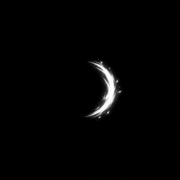
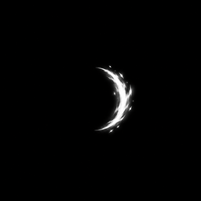
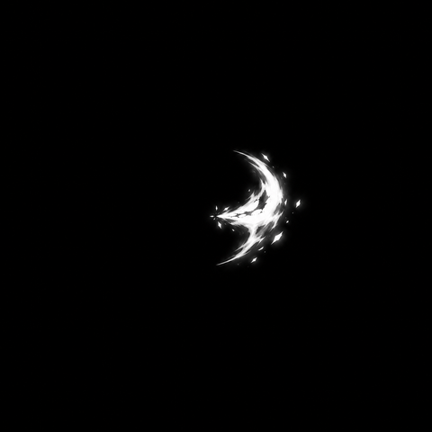
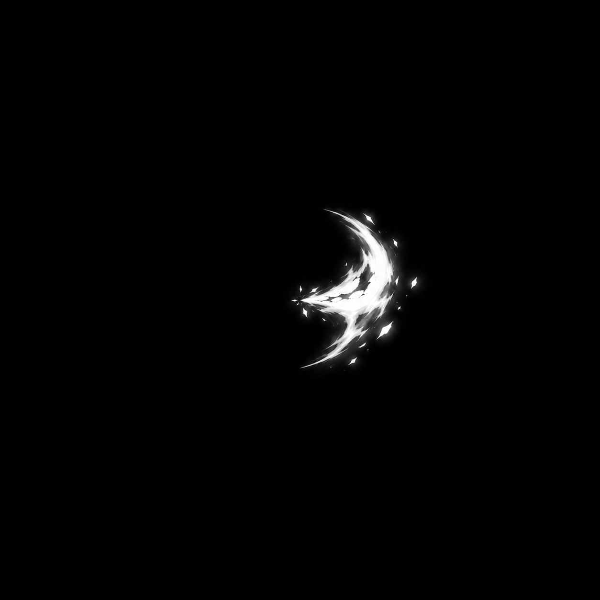
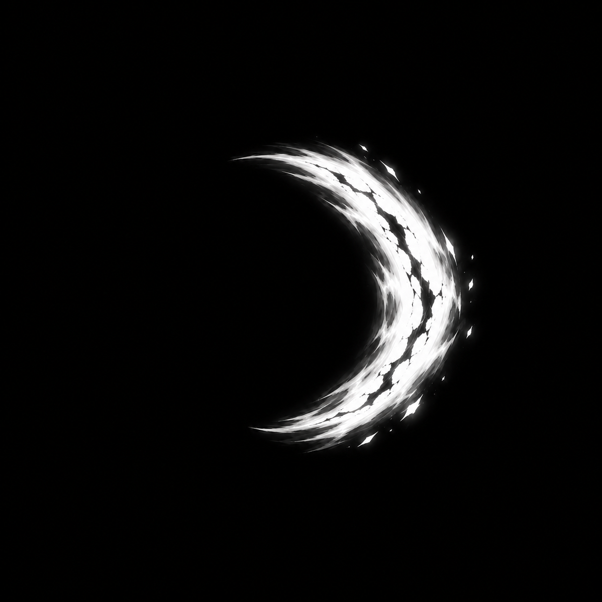
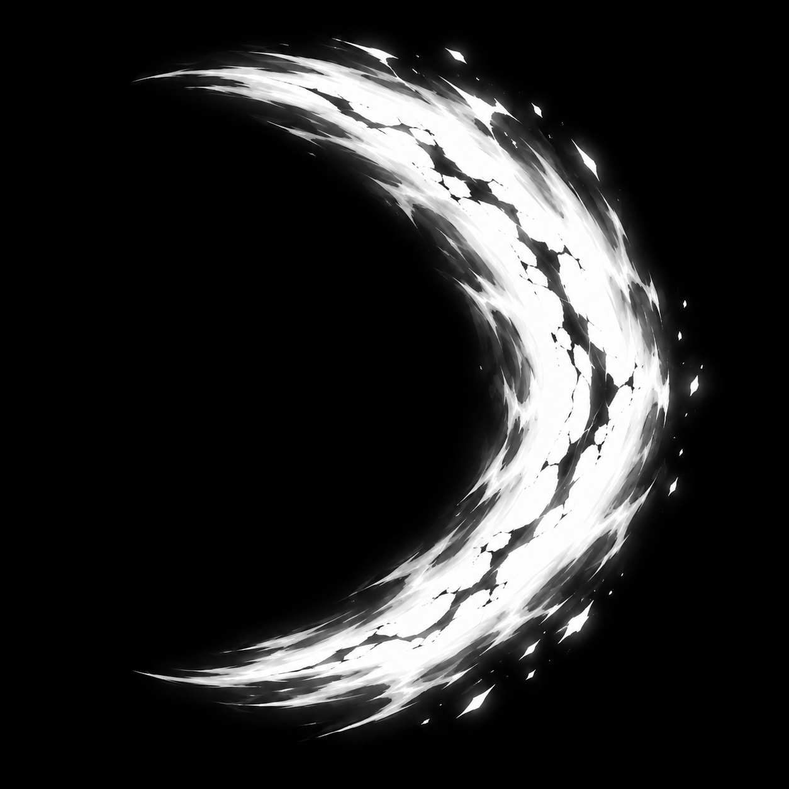
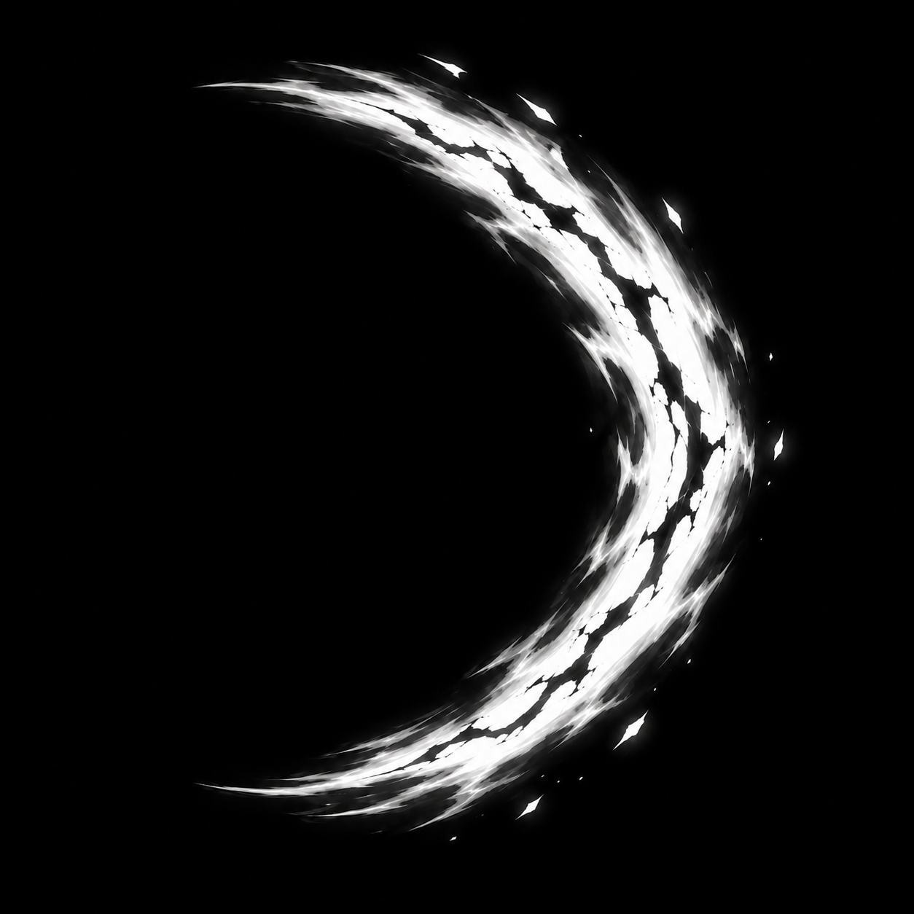
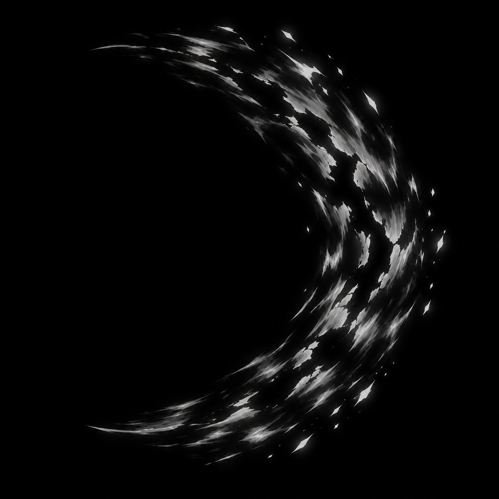
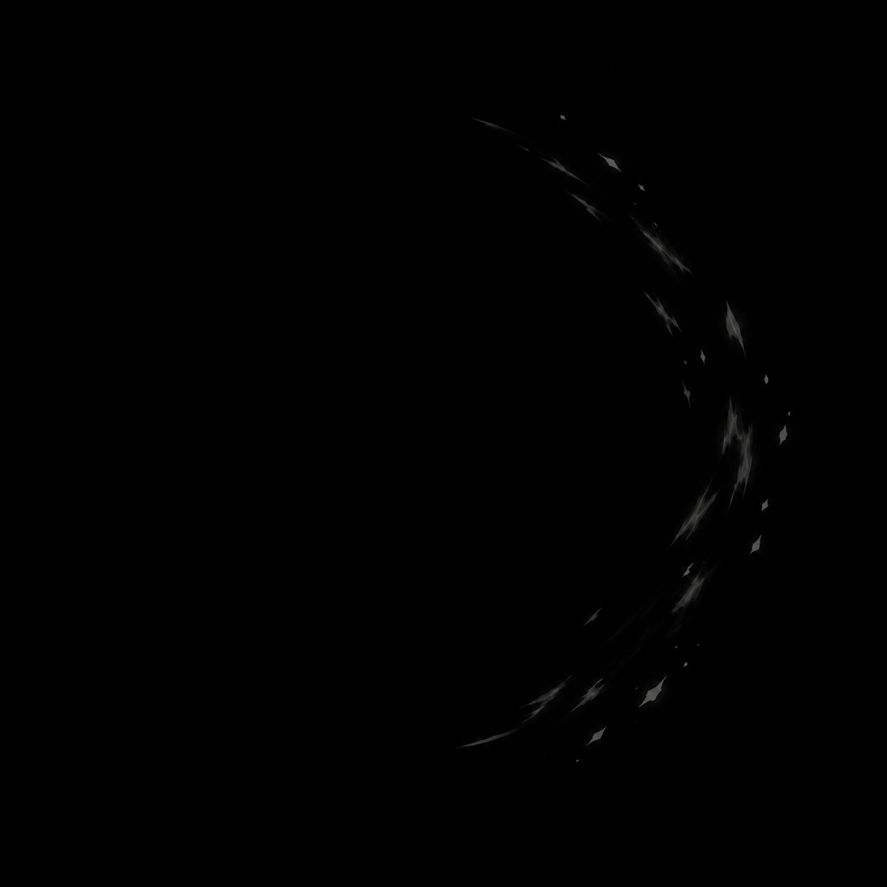

L-001 · cinco sequências / 30 imagens Revisão ampliada DRAFT. Cinco gates históricos preservados; 25 fases adicionais aceitas visualmente DRAFT pelo dono. Nenhuma geração nova, normalização ou admissão. As prévias históricas usam escala/cadência ilustrativas; os links abrem as fontes exatas do manifesto.
Arco Radiante · Arco de Fogo · Durvall · Ruptura Sombria · Brook · Guarda de Lliira · Maelor · Comunhão · Revisar expansão, espessura, afinamento/dissipação e leitura96px; Brook/Maelor também fechamento do ciclo. Reprovar somente exceções por código/versão se necessário.
Arco Radiante 
Prévia histórica, não é runtime. Gate preservado: E03. Prancha histórica
Arco de Fogo 
Prévia histórica, não é runtime. Gate preservado: F03. Prancha histórica
Durvall · Ruptura Sombria 
Prévia histórica, não é runtime. Gate preservado: H103. Prancha histórica
H101 v01 
DRAFT_VISUALLY_ACCEPTED
00b891b430ae103cf252d2fb84cd871baffa6c924d16910dc2df7f985ce48844 H102 v02 
DRAFT_VISUALLY_ACCEPTED
809ecc013e2443033ef335632db7a9691d022f3321da017ca426326fb3e2020e H103 v01 
HISTORICAL_GATE_ACCEPTED
e5f022ec1c630409f6405add4250ebfc73ebe052ea233e8c227ec5ce67fe8974 H104 v01 
DRAFT_VISUALLY_ACCEPTED
341e6fa8418c4d4aca7f06b21116c3be8ff634cbb2fd6340da7c47dd283a3556 H105 v01 
DRAFT_VISUALLY_ACCEPTED
17bbd4c6c43348370cb860feeb1eb10113d2bbb35a1a980d0c37bbced2ad02a2 H106 v01 
DRAFT_VISUALLY_ACCEPTED
86c6d108e6b7034acbec687bcfc7ea1537cde6480b389b7870b0b5cb5826314c Brook · Guarda de Lliira Prévia histórica, não é runtime. Gate preservado: H201. Prancha histórica
H201 v02 HISTORICAL_GATE_ACCEPTED
076c90602cf4f72e7e78df90791e8dbda1d47be473f81c1687e9c91347af9166 H202 v01 DRAFT_VISUALLY_ACCEPTED
9dfd35c3d44f632a910699f121adcdbfb92b1b9570f897e16fae2a0a581ea193 H203 v01 DRAFT_VISUALLY_ACCEPTED
d8b58bc231a433cf8d33ea4bc19a55f7362afcba71e27b1c58ae67389694522e H204 v01 DRAFT_VISUALLY_ACCEPTED
a146a13a5af5a533f3e3f199bd37870520d95abd6d2f6339bd74032b6e0ac74f H205 v01 DRAFT_VISUALLY_ACCEPTED
795e92c2e1bc58c2ed2f2431e5ae586d063de694c5dc78d65306282a54daf01b H206 v01 DRAFT_VISUALLY_ACCEPTED
f353d745355e6d4792d793e3e473c06c6b20a50302f50f65703ea5960f8c3270 Maelor · Comunhão Prévia histórica, não é runtime. Gate preservado: H301. Prancha histórica
H301 v01 HISTORICAL_GATE_ACCEPTED
ed622fe59738017a625ebd2daaf90d2f738213d1fca299d9240d08ccd3fd3969 H302 v01 DRAFT_VISUALLY_ACCEPTED
7a289aae4816f19800cfdefd63dae9e3662020d590b92d1df9dcefd1e27543bd H303 v01 DRAFT_VISUALLY_ACCEPTED
c6dddbbcc415c987e32a2fe31a3ef61360b026f6cf2c08232eae8f43b4a3678a H304 v01 DRAFT_VISUALLY_ACCEPTED
b5b5c8334439e61fcce91922ef624addbbf92b7e27696b2c65cccaf57bd79821 H305 v01 DRAFT_VISUALLY_ACCEPTED
5c1e88fb174de1791a186c6b75eb86ba89d066f47f99b7ae4f4f91453b35d25d H306 v01 DRAFT_VISUALLY_ACCEPTED
574f8ca4fedc2d3dfbdf452a8aef7278dd840bc7ed13918bd1e06b49a27a73aa